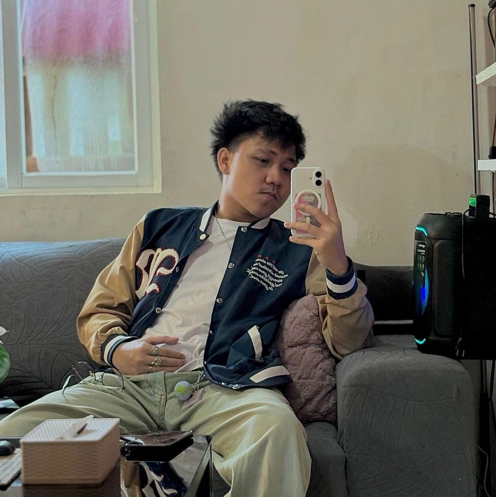
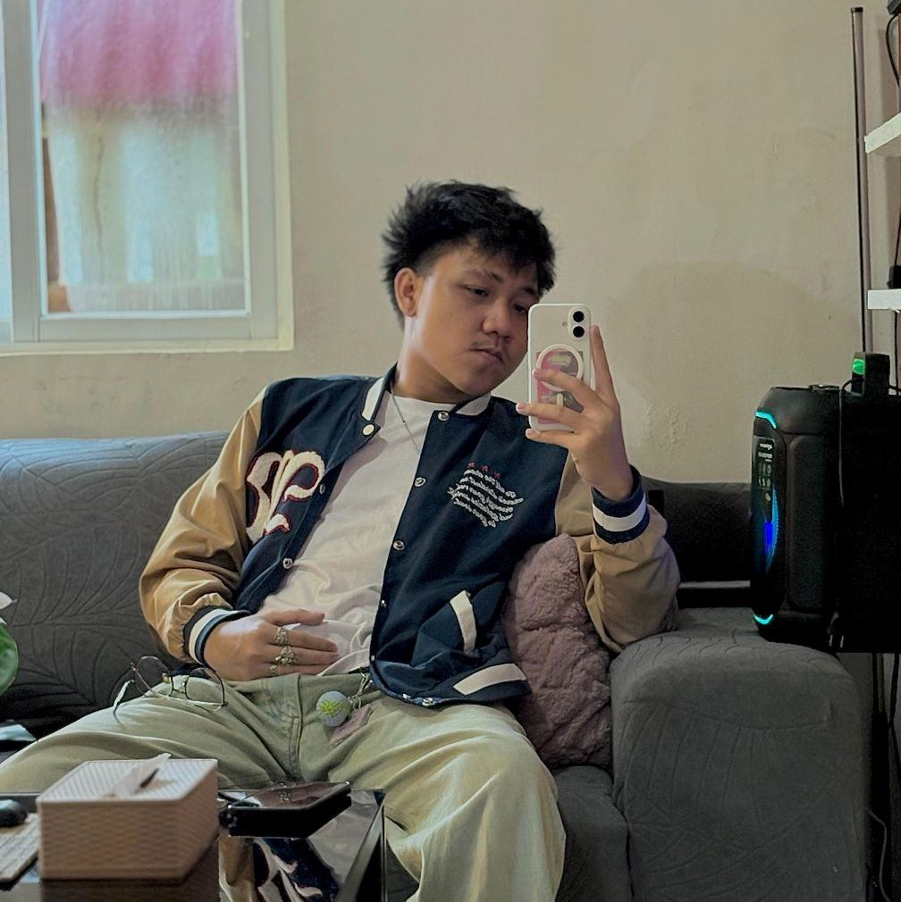

About us
 

We are 3rd-year BSIT students from Pamantasan ng Lungsod ng Pasig, turning ideas into interactive experiences.
This portfolio showcases our collaborative and individual projects—many of which were born from academic subjects and shaped by real-world problem-solving. From web and mobile development to database and system design, each work reflects our growth as aspiring IT professionals.
We bring our ideas to life using languages such as HTML, CSS, JavaScript, PHP, Java, React Native, and Python, focusing on building practical, user-oriented, and reliable solutions.